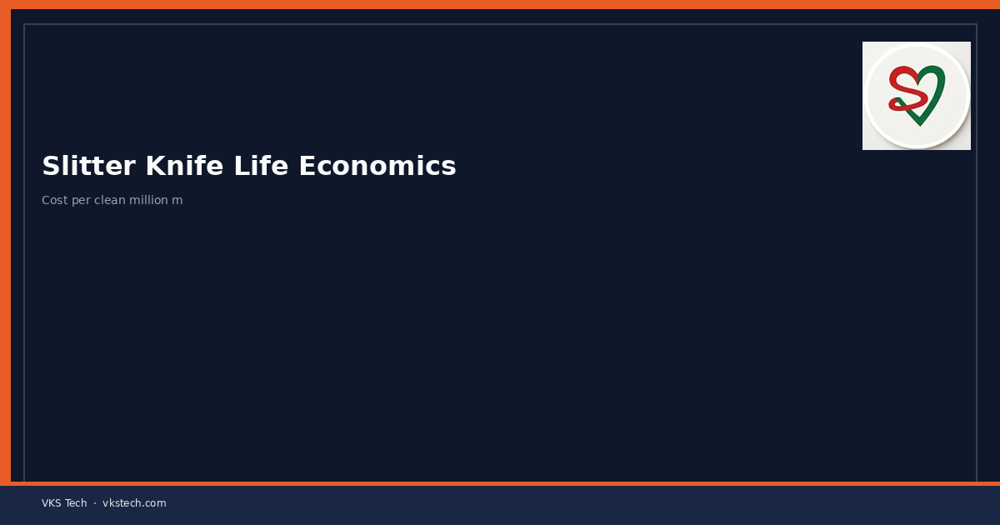

🔪 Running Dull Knives to “Save Blades” Transfers Cost into Dust, Edge Waste and Customer Claims.
📖 9-min read · Slitting · Cost
Track metres or shifts per knife set. Change on quality signal (dust, feathered edge), not only breakage. Cheap blades that force early stoppages are not cheap.
📌 Practice
- Log life by structure family
- Change on edge quality, not only failure
- Compare cost per million metres, not per blade
💡 Metric: Cost per clean million metres beats price per knife.
🔪 कुंद चाकू “बचाने” से लागत धूल, एज वेस्ट और क्लेम में चली जाती है।
📖 9-मिनट पढ़ें
💡 मीट्रिक: साफ मिलियन मीटर की लागत प्रति चाकू कीमत से बेहतर है।